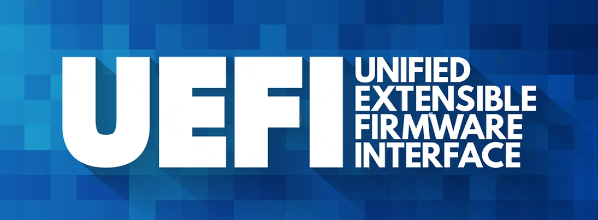

How to reach the BIOS Screen/Change the Boot Device in UEFI Windows 10 & 11

This guide explains how you can reach the BIOS Screen in your UEFI Windows 10 & 11 PC, if you cannot reach the BIOS menu with the keyboard shortcuts.
If you cannot get to the Boot Menu to change the Boot device because the shortcuts won't work, this guide will do the trick.